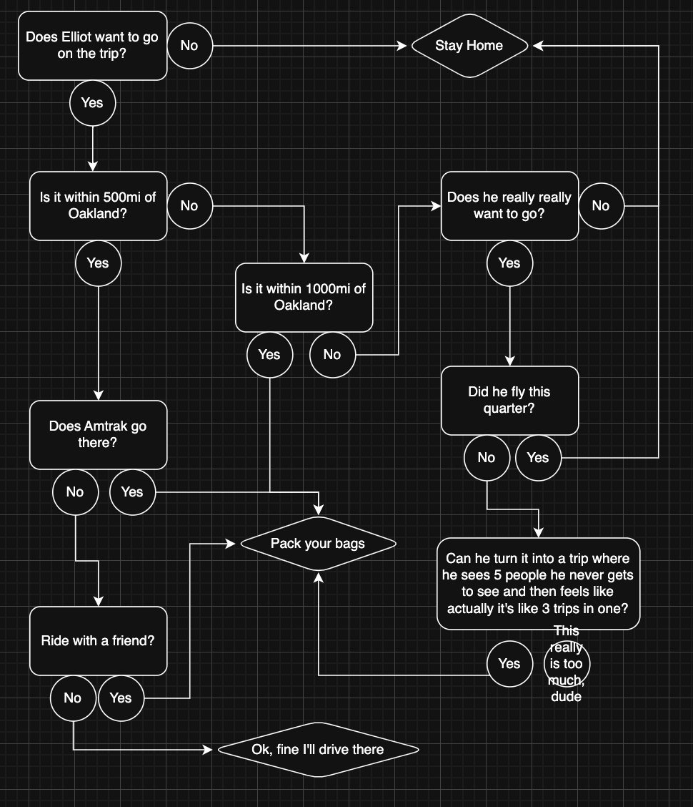

May 24, 2026

Feel free to print this out and keep it in your wallet next time you're thinking of inviting me to a ski weekend or daughter's wedding. I keep mine right next to my vegan, gluten free, alium free friend's flow chart and my Peyton Manning wrist playbook.
Apparently the average Amtrak passenger emits about a third less carbon than an air traveler. So mileage matters more than mode when I consider emissions.
U.S. Dept. of Energy's calculations put air travel BTUs per passenger mile at 2,341 and Amtrak BTUs per passenger mile at 1,535